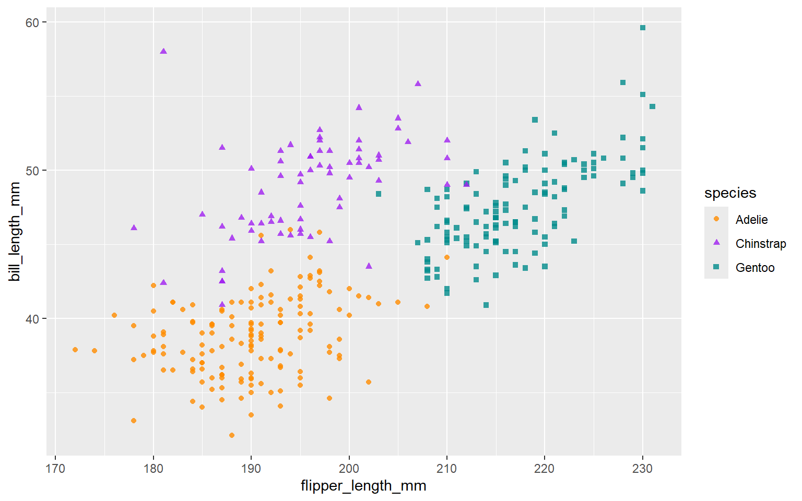

We don't talk about Quarto
Until now!
By Alison Hill in rmarkdown
April 4, 2022
Thumbnail image from the Official Disney Fan Club website
Background
Early last year, I was busily checking Quarto, and totally terrified of checking Twitter. Seriously, I held my breath every time. It. Was. Not. Ready. It was changing fast and breaking fast. Everyday I was seeing the GitHub stars slowly creeping up, and I was nervous. And we had all agreed on our team that “We don’t talk about Quarto” on the outside (this was pre- Encanto). That means not a single one of us were tweeting or blogging about it, or even at that point trying to teach it to anyone — yet.
But, things started easing up. By the time summer internship positions at RStudio were announced, I was excited to have reserved a slot for our first Quarto intern, who would be tasked with working with myself, JJ Allaire, and Charles Teague to help get the Quarto docs off the ground. We brought Paul Villanueva on in one of the best hiring decisions I’ve made, and he ended up doing so much more than just docs! By August 2021, I had convinced Paul to join me as a TA to teach the first public Quarto workshop for the R/Medicine. And I honestly felt comfortable teaching Quarto then — it felt like it was time. Luckily, the Quarto team had stabilized releases of Quarto in August before the workshop, and we were able to spin up a custom RStudio Cloud environment to use a preview release of the RStudio IDE, and we were off!
Fast forward to now, and it looks like we are talking about Quarto. I am >6 months from my time at RStudio and I am writing a book with the amazing Rich Iannone about doing data science with R and Quarto, in a Quarto book, and I’ve built an internal knowledge repository for my IBM team with Quarto (these are not R or RStudio users!). So in this post, I thought I’d finally share my notes to myself after testing and teaching Quarto, and now as a user and enabler.

What actually is Quarto?
So thanks for the blog post Alison, but what actually is Quarto?

That is a great question. Four things:
- It is a way to render plain text source files that contain code
written in Python, R, or Observable.
-
If you want to use Python, you don’t need to install R or RStudio.
-
If you want to use R, you don’t have to install Python.
-
If you want to use Observable, you just can in a Quarto document or project.
-
- In any language, when you render, you execute the code and include plots, tables, and other results in your output woven together with narrative text. So it is still “literate programming.”
- When you render, you can export to over 40 different output formats, all enabled by Pandoc.
- Quarto adds functionality on top of Pandoc’s markdown language, and the rest of this post will give you some pointers to these features.
Obviously, if you are already an R Markdown user, this will sound pretty familiar but maybe a shade different — yet the software itself is a completely new incantation designed from the bottom up.
What you’ll need to know
-
Quarto is actually a separate installation.
-
What to do? Follow Step 1 to download Quarto for your OS. I do this now regularly about once a week to make sure I’m getting the latest goodies.
-
There is also an R package, which will allow you to render at the command line if you aren’t an RStudio IDE/button clicking person, but you could also use the terminal, which is what I do.
-
-
Quarto works within the RStudio IDE.
-
What to do? Download the latest RStudio IDE release from this link: https://quarto.org/docs/get-started/hello/rstudio.html
-
It has actually worked inside the RStudio IDE for almost a year. It was previously supported only in the dailies (which are honestly low-risk to download and use!). But nowadays it works with the latest official released version of the RStudio IDE. I still update my RStudio version to the latest daily whenever I remember to update Quarto.
-
-
The RStudio IDE’s Visual R Markdown Editor was in actuality the first “shots fired” from Quarto. The announcement about the Editor was published 2020/09/30, and the first Quarto commit was only 5 days before on 2020/09/25.
-
Fun fact: I forgot to tell our first Quarto intern, Paul, about the visual editor until about 4 weeks into his internship— and it totally changed his outlook, even as an experienced Markdown user. So don’t sleep on the visual editor when teaching and using Quarto. In particular, don’t miss:
-
Copy/paste from Google docs (did you know this? Literally just copy any formatted text from Google docs and paste it into the visual editor)
-
What you’ll like
Across all formats:
-
Two column (and more) flexible content layouts for displaying images, code, text, tables, plots, anything. This to me was the “one killer feature” when JJ first started showing me regular demos — I was floored. While patchwork can get you pretty far, this allows for literally anything (including just blank space) to be in any position, making it a layout swiss army knife.
-
Global chunk options set in your YAML using the
executekey (no more knitr setup chunk!). See all supported chunk options (that go beyond knitr ones) here.--- title: "We don't talk about Quarto" subtitle: "Until now!" execute: echo: false ---Instead of:
```{r}
#| label: setup
#| include: false
knitr::opts_chunk$set(echo = FALSE)
```
-
Easier verbatim chunks using
echo: fencedas a code chunk option when you want to show and execute and double curly braces like{r}for show and don’t execute (this was also improved in knitr too recently).For example, in the first chunk, I am using this chunk option here (invisibly) to show a chunk where I am suppressing the results printing:
```{r}
#| results: hide
1 + 1
```
```{r}
#| results: show
1 + 1
```
In the chunk just above, I would allow the results to be shown, but
because I used {r} as the chunk engine it isn’t evaluated.
-
Chunk options as YAML with the special hashpipe
#|(great for longish alt text) (note that Quarto also added a way to add alt text for Markdown inserted images, thanks to Silvia Canelon)```{r} #| label: penguin-plot #| fig-alt: "Scatterplot of flipper length by bill length of 3 penguin species, where we show penguins with bigger flippers have bigger bills." #| warning: false library(palmerpenguins) library(ggplot2) ggplot(data = penguins, aes(x = flipper_length_mm, y = bill_length_mm, color = species)) + geom_point(aes(shape = species), alpha = 0.8) + scale_color_manual(values = c("darkorange","purple","cyan4")) ``` -
Universal cross-referencing ( no more
bookdown::html_document2(), etc.) -
Parameters (side note: here is the first rmarkdown issue from 2014 that Tom Mock and I found where the idea for parameters was “born” 👶)
And, if you are anything like me and your heart belongs to HTML output…
-
SUBFOLDERS for projects (praise be). Yes you can have a website or book or any other multi-file Quarto project and render content in even deeply nested subdirectories. Rejoice!
To put in your final product, let your heart decide- you can either list as chapters or as parts (similar to bookdown) or use listing pages (like with distill).
-
Built-in site search (enabled by default for books and websites). Can also be tweaked.
-
“Batteries included” HTML features across single documents and projects (like HTML books, websites, etc). This may be a RIP to the wonderful “Pimp my Rmd”.
- Here are just a few features that were available in some but not
all R packages with
.Rmd▶️ HTML output formats: code folding, copy/paste chunks, callout blocks, TOC on the side, code linking via downlit (previously only available in pkgdown), tabsets, anchored headings
- Here are just a few features that were available in some but not
all R packages with
-
Show source to anyone viewing your HTML output (this was previously only possible with
rmarkdown::html_document()- my tweet from when I first discovered this output option!) -
Compatibility with Hugo/ blogdown. This post is a
.qmdfile withformat: hugorendered with Quarto.--- title: "We don't talk about Quarto" subtitle: "Until now!" format: hugo ---There is nothing stopping you from using Quarto to render individual posts, then blogdown to use Hugo, or just use Hugo from command line. The Hugo-specific flavor of Markdown ( goldmark) is also supported by the visual editor.
What you’ll stumble on
-
Chunk options as YAML
#| fig-alt: "Scatterplot of flipper length by bill length of 3 penguin species, where we show penguins with bigger flippers have bigger bills." #| echo: false #| warning: false- I always forgot the symbol, which is
#|(read: the hashpipe). If you also cannot remember this, channel your 90s kid and enjoy this Weezer flashback:
-
No equal sign, use a colon instead (i.e.,
comment: '') -
If the value is
true/false, use lower case! (no more screaming booleans!) 😱 Soecho: false.
- I always forgot the symbol, which is
-
To render to a specific format, use the
formatYAML key (instead ofoutput)1--- title: "We don't talk about Quarto" subtitle: "Until now!" format: html --- -
Use
kebab-case🍡 for all YAML keys and to delimit figure/layout/code chunk options instead of … what we had before.This will be confusing at first because your knitr chunk options won’t match the package documentation. See here for the change (Quarto will auto-convert
fig.altfor example tofig-alt, but still, you or someone you teach might be confused by this). -
You’ll be rendering as your verb, not knitting 🧶 but you’ll still be using the knitr package as your engine if you want to use R instead of Python code chunks.
- This also means to watch knitr for news! Follow releases carefully— they will still matter.
-
For projects like books, websites, blogs,
quarto rendervsquarto preview. See docs here. Not sure I have advice at this point, but do read this bit:Note that development server updates do not cause an update to the final site output. Consequently, you should always
quarto renderyour site before deploying it, even if you have already previewed the changes with the development server [withquarto preview].
What you’ll miss (for now)
-
Defining your own format.
-
Making and bundling templates that are easily shareable.
-
Xaringan and remark.js for slides. This particular package and flavor of markdown was never supported in the visual editor because it is not a Pandoc-defined output format (the visual editor is specific to Pandoc-flavored markdown). So for HTML slides in Quarto, reveal.js is where it is at. I had a post about doing that research too (actually all my testing at that time was in Quarto!).
What you (probably) won’t miss
All the packages, each one working slightly different than the ones you had already used. Essentially your experience trying to figure out to work the shower everytime you go to a new hotel, but for each package in the R Markdown ecosystem:
Every dang hotel I've stayed in. pic.twitter.com/xPb7PdwG2f
— Keith Humphreys (@KeithNHumphreys) November 13, 2021
If you are on my blog, you are probably an R Markdown lover. As well you should be. As am I. But who among us has not chased their own tail for hours trying to figure out why one YAML key works over here but not over there. Or perhaps you simply lacked the wherewithall to branch out into the various extension packages because you sensed a rabbit hole ahead. Or maybe you were a person who filed or upvoted GitHub issues begging RStudio folks to just give you tabsets for every single html-based output format. You probably will not miss this.
-
This one screwed me up so bad, I actually tried to go back to rmarkdown at one point and couldn’t figure out why I couldn’t knit to
output_format: html_document🤦🏻 ↩︎